Emulator is an easy-to-use, handcrafted, still unpolished ZX Spectrum emulator built completely from scratch using Java.
It does not have any fancy features, it does not include a GUI debugger, an integrated assembler or disassembler,
and it is in no way meant to be a complete ZX Spectrum development environment.
Development is somewhat active and ongoing, meaning new features, tweaks and performance improvements are added every now and then. Feedback and suggestions are more than welcome, however, please keep in mind that this is a hobby project and not a commercial product.
While this project strives to accurately emulate the original hardware, any claims of accuracy are intended as best-effort targets rather than absolute guarantees.
Here's a short breakdown of the main features you'll find in this emulator. Please note, however, that some of the features might still be in an experimental stage.
Z80
- support for the Z80 CPU CMOS and NMOS variants
- IFF2 bug support for the Z80 CPU NMOS variant
- handles the entire Z80 instruction set, both documented and undocumented
- passes the Zexall and Zexdoc test suites, as well as other traditional Z80 CPU tests
- accurate timings
ZX Spectrum
- support for the ZX Spectrum 16K, ZX Spectrum 48K, ZX Spectrum+, ZX Spectrum 128K and ZX Spectrum +2 machines
- beeper and AY sound
- memory and I/O contention
- floating bus
- early and late timing support
- cycle accurate screen rendering, multicolor effects
- border effects
- Kempston joystick - keyboard mapped
- Kempston mouse
Emulator
- loading and saving snapshots: SNA
- loading from tape images: TAP, TZX
- flash loading
- tape browser
- saving to tape: TAP, WAV
- support for loading custom ROM images
- loading of supported files from inside ZIP archives
- support for multiple border dimensions
- full screen exclusive mode with display mode selection
- light and dark themes
- display scaling: 100%, 200%, 300%, 400%
- cross-platform
Miscellaneous
Available as a standard Java archive, and also as a native executable for both Windows and Linux.
The native images are built from the original JAR using GraalVM.
The following non-exhaustive list of features is currently not supported:
DRAM fading, snow effect, PAL TV | CRT effects, loading from and saving to various snapshot formats, handling POK files, Microdrive support, four brightness levels, ULA+, TZX CSW blocks, TZX GDB blocks, mixing flash loading with standard speed loading, PZX, Lenslok, printing, loading from WAV files, loading from CSW files, RZX, and probably many others ...
{kind=link}
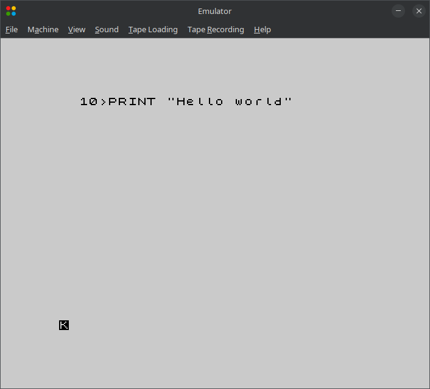
{kind=link}
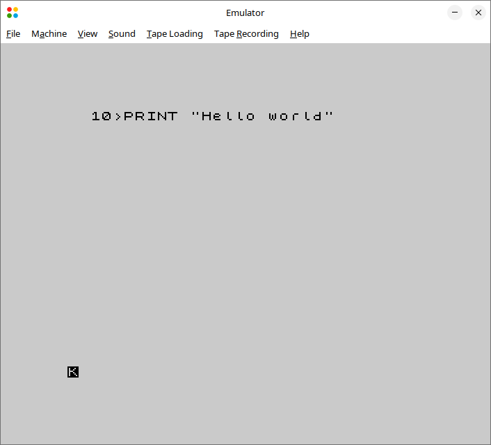
{kind=link}
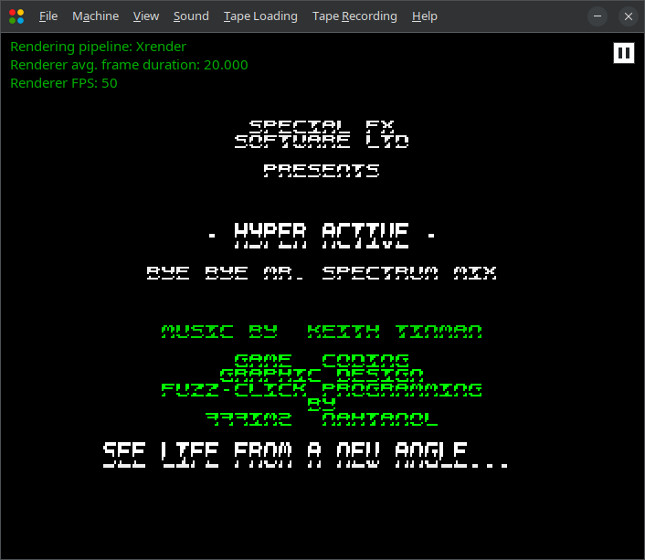
{kind=link}
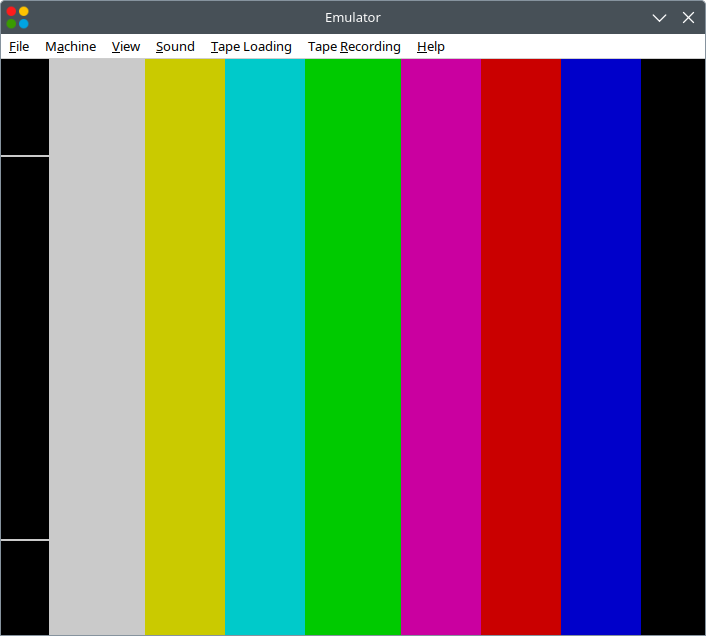
{kind=link}
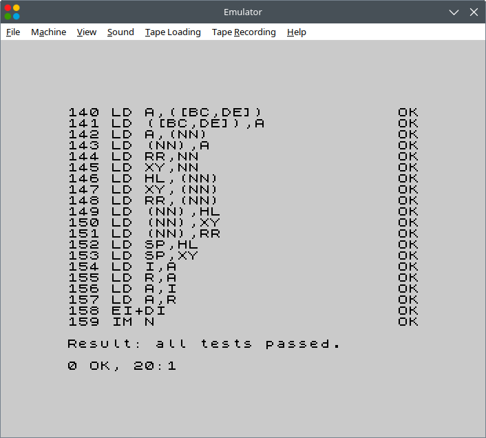
{kind=link}
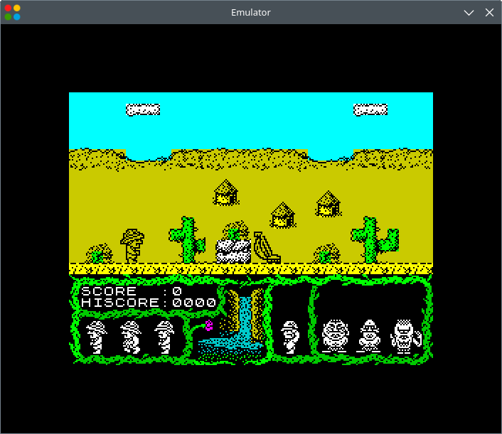
{kind=link}
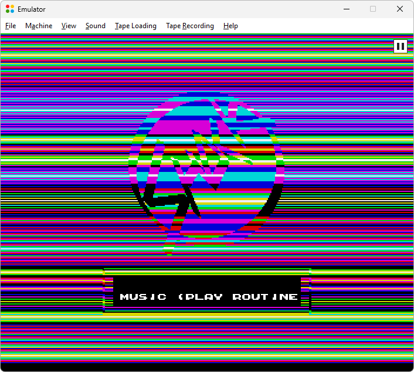
{kind=link}
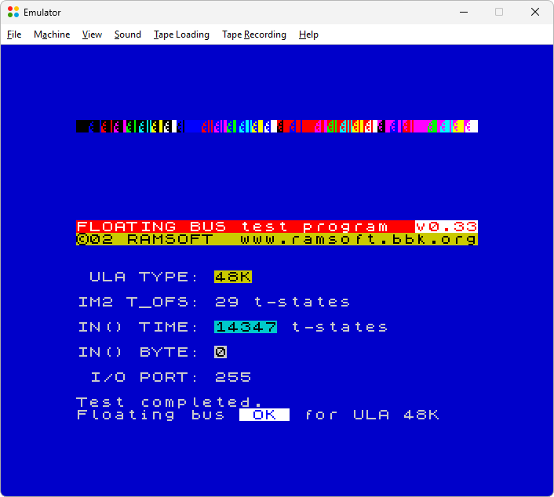
{kind=link}
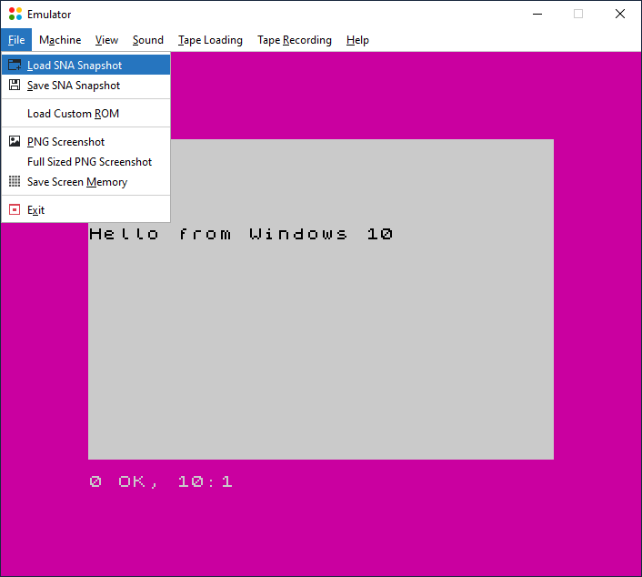
{kind=link}
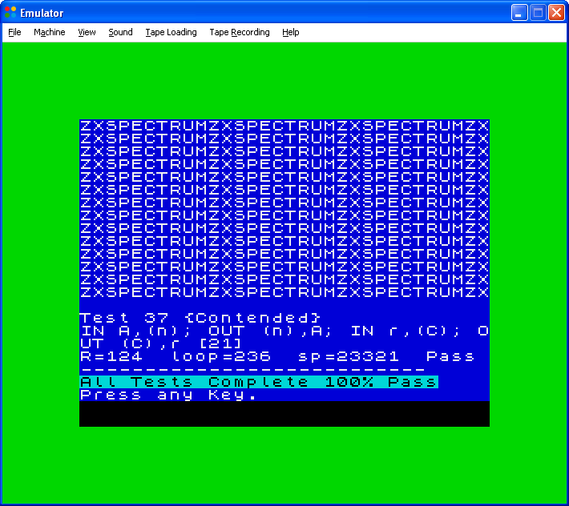
{kind=link}
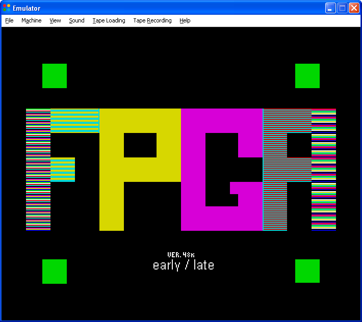
{kind=link}
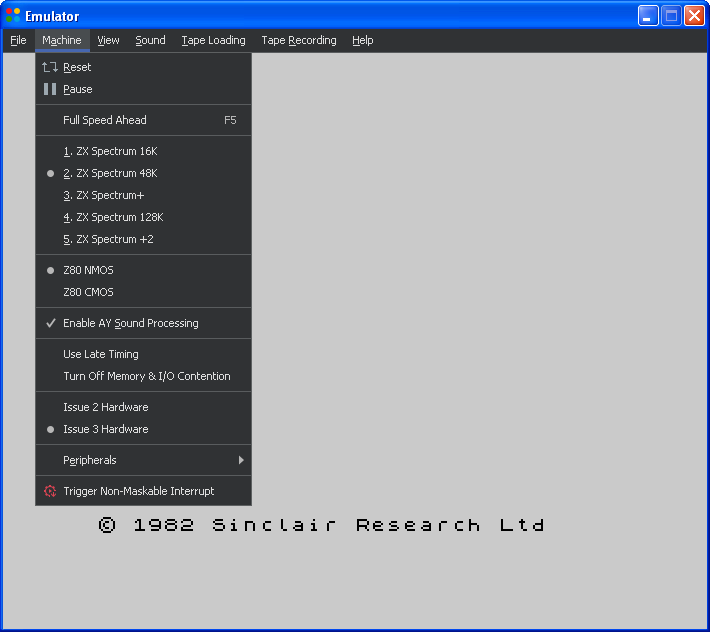
No packages are currently available.
Read more about the MIT License at https://choosealicense.com/licenses/mit.